A Vista brand for cross-track silica solutions. Our mission is to let small and mid-size overseas plants get a truly fitting silica solution at lower trial cost.
Vistasilica is a Vista brand focused on overseas functional-ingredient customer development and onboarding. We believe silica's value is not "one more raw material," but whether it solves a real process problem — liquid-to-powder, anti-caking, cleaning, disintegration, dephosphorization, oil control.
Across feed additives, food powders, oral care, agrochemical formulations, edible oil refining and personal care, we work by "find the right customer, sample fast, repeat steadily" — supporting local formulation plants, blenders, licensed importers and technical channels in target countries with selection, samples, documentation and onboarding.
Let small and mid-size overseas plants and blenders get a truly fitting silica solution at lower trial cost.
Reorganized the silica business around six real application tracks and built a country-by-country customer map.
Built the six-track customer review sheet, sample process and a full compliance document pack.
Focused on high-fit, high-repeat customers and proved the "light first order + multi-grade repeat" model.
With vistasilica.com as the window, we present selection, samples, documentation and onboarding in one place.
From pharma to personal care to edible-oil refining, our team presents at leading international exhibitions — running live demonstrations, technical sessions and face-to-face meetings with formulators and refiners worldwide.
Pharmaceutical excipients — introducing high-purity precipitated silica (VS-PH350) for oral solid dosage.
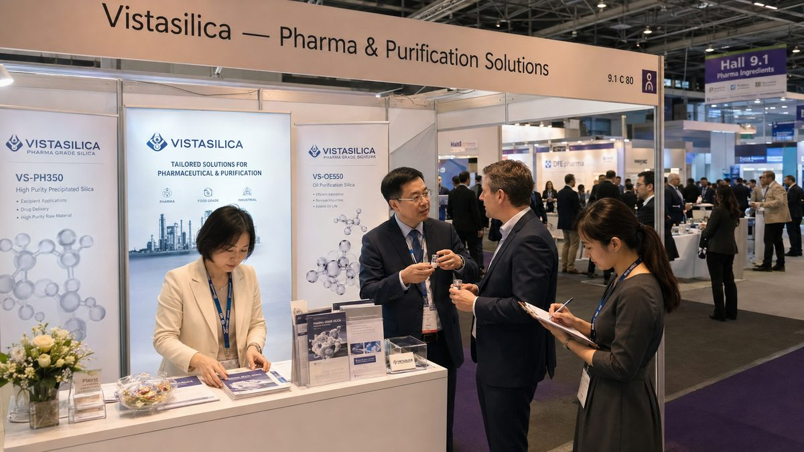
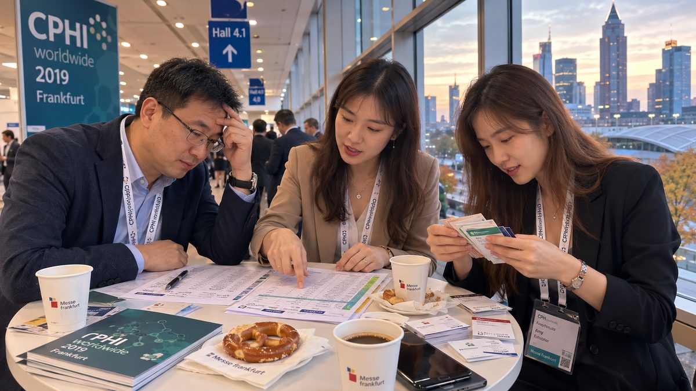
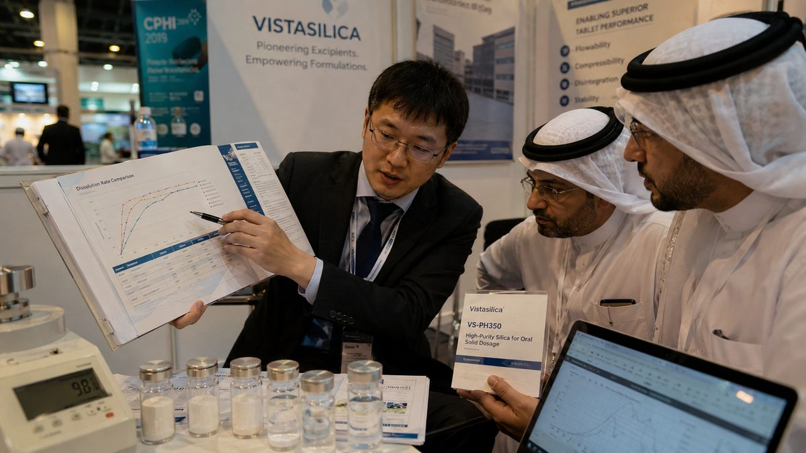
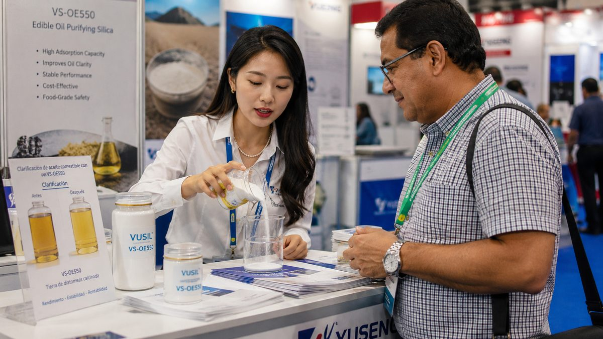
Food & feed anti-caking and carrier solutions — flow and stability demonstrations for powdered blends.
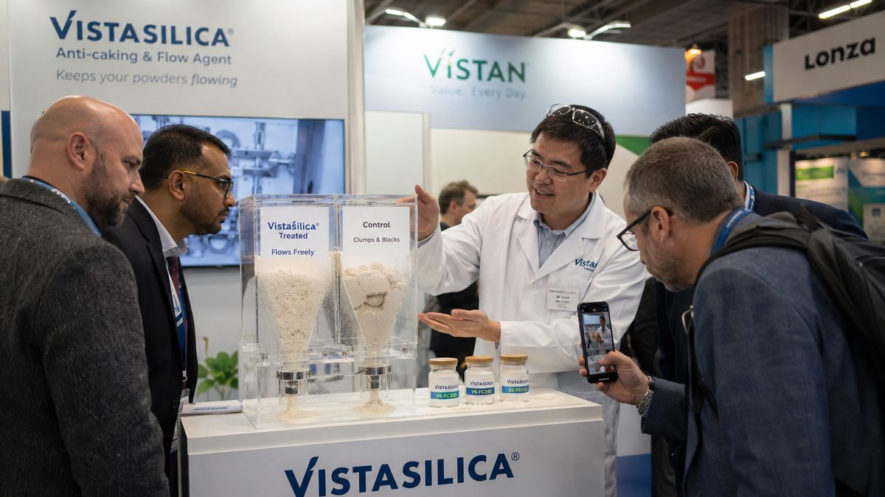
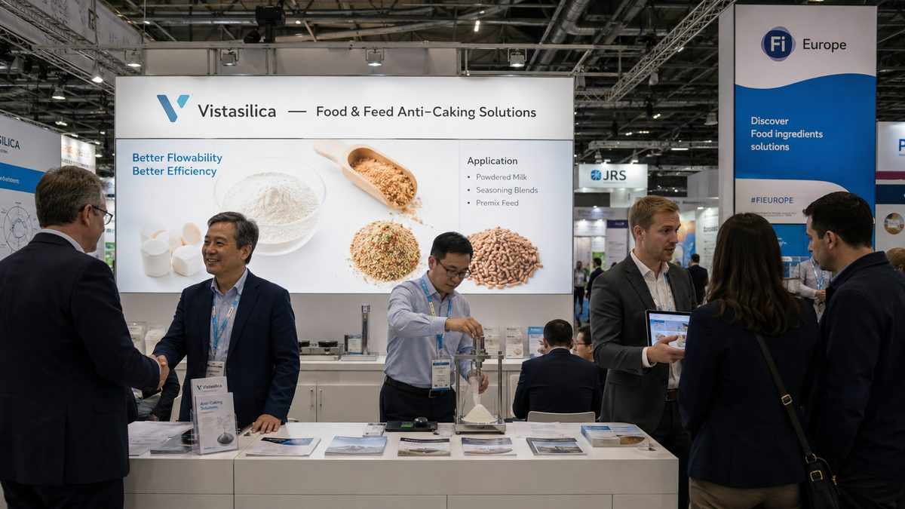
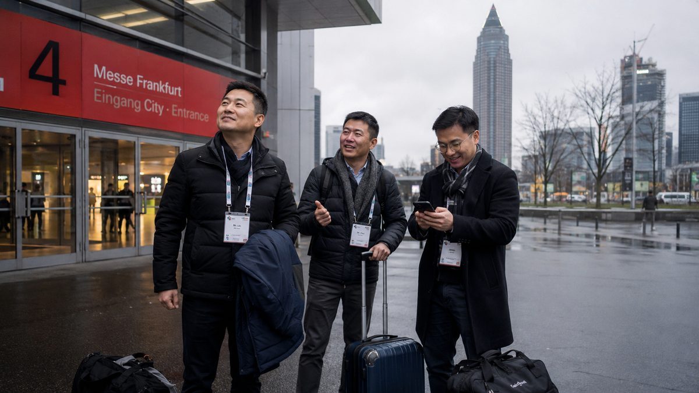
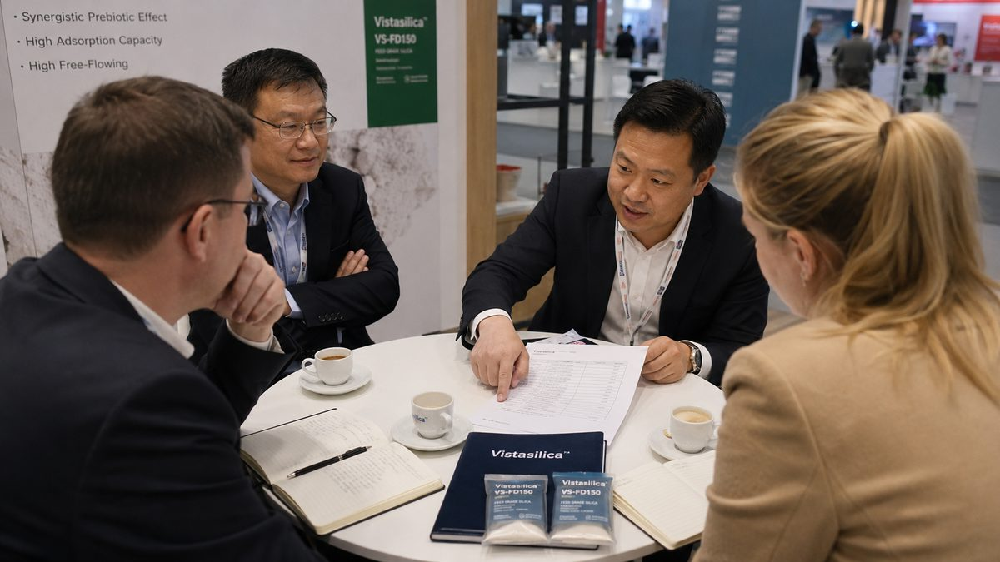
Personal & oral care silica — soft-focus and mattifying grades (VS-DC300) with live sensory panels.
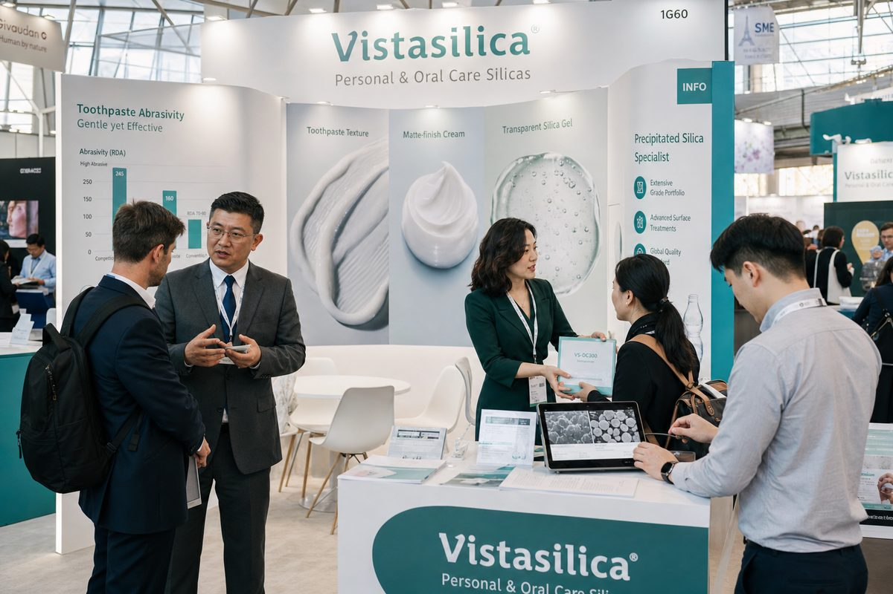
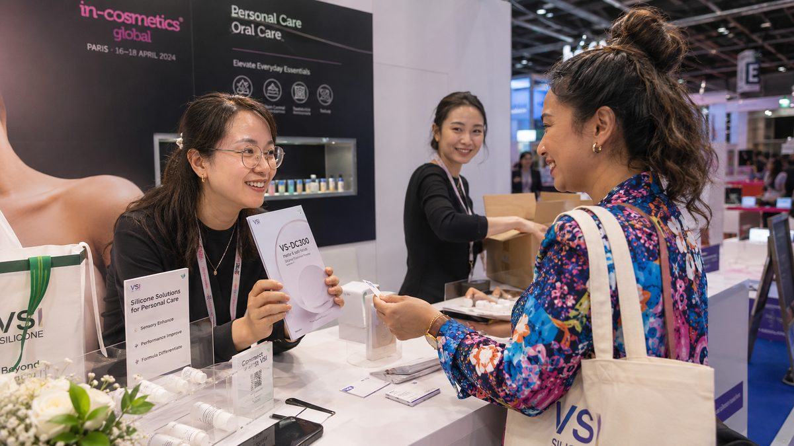
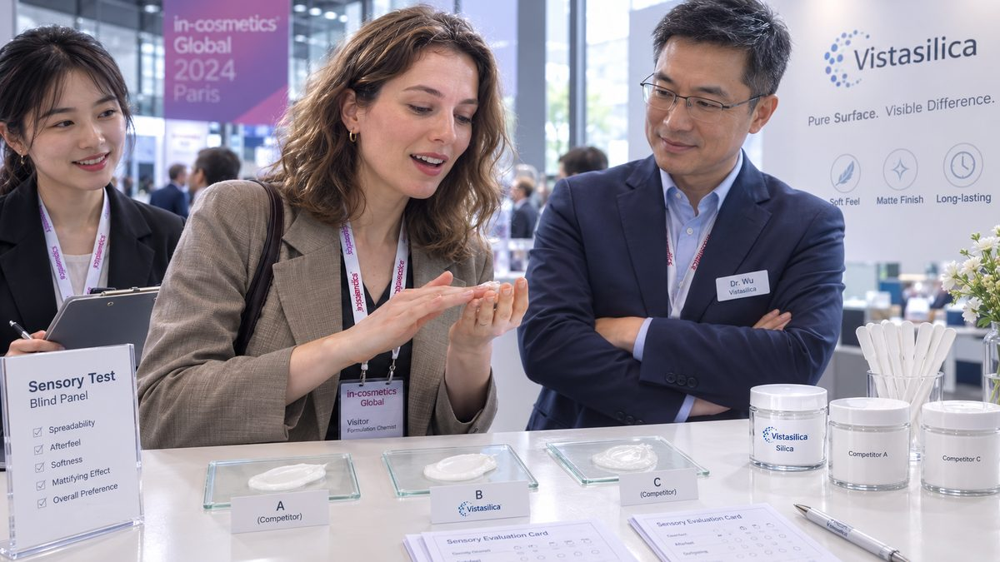
Edible oil refining — silica adsorbents for phospholipid removal (VS-OE550), with technical posters and refiner meetings.
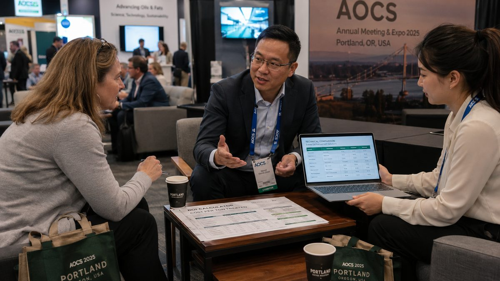
Precipitated silica is a synthetic amorphous silica — safe, inert and widely approved for food, feed, oral-care and cosmetic use. We focus our sustainability effort where it is real and verifiable: product safety, resource efficiency and honest documentation.
Amorphous precipitated silica is not classified as hazardous under CLP and is approved as E 551 (food), a feed material and INCI Hydrated Silica (cosmetics). It is distinct from crystalline silica and carries no silicosis risk in normal handling.
Because our grades are engineered for high performance at low dosage, customers often achieve the same result using less material — as seen in feed and pharma cases where dosage dropped by half or more, cutting freight, packaging and warehouse footprint.
In edible-oil refining, silica adsorbents reduce bleaching-earth consumption and waste; in formulations, better flow and stability cut rework and product returns. Efficiency gains for the customer are environmental gains too.
We provide SDS, technical data and compliance documents so customers can meet REACH, food-contact and regional regulatory requirements. We state what is validated and what is typical — no overstated claims.
Sample-first onboarding and flexible packaging (20/25 kg bags to FIBC) help customers order what they actually need, reducing over-ordering and obsolete stock across the supply chain.
As we complete in-house validation and expand certification, we will publish grade-specific data and third-party test reports here — building sustainability claims on evidence, not marketing.
We prefer to under-claim and over-deliver on sustainability. Specific certifications and environmental data are shared as they are formally established and verified.
A focused team spanning R&D, application engineering, sales and marketing — working directly with formulators and refiners from first sample to repeat order.
Founder & General Manager
Leads Vistasilica's overall strategy and global export operations across seven markets.
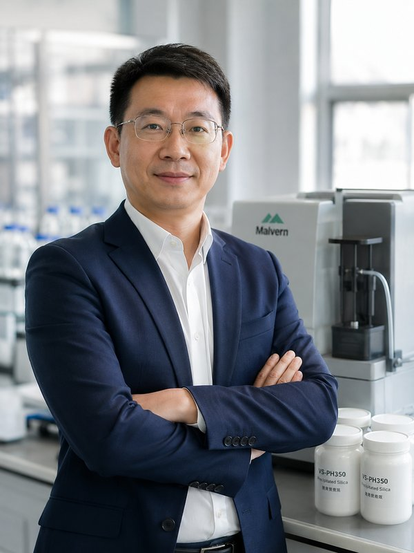
Technical & R&D Director
Directs grade development and application technology; presenter on silica adsorbents at AOCS 2025.
Chief Scientist
Focuses on silica particle morphology, surface modification and structure-performance design.
North America Director
Leads sales and customer development across the United States and Canada.
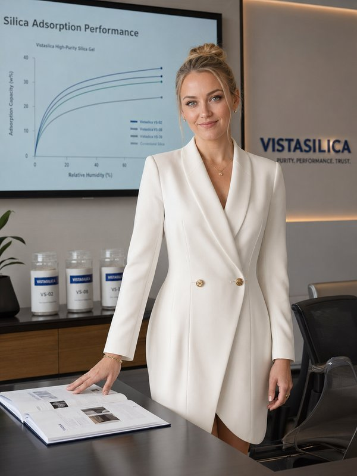
Marketing Manager
Owns technical marketing, product communication and international exhibition programs.
Sales Manager
Manages customer inquiries, sampling and order onboarding across application tracks.
Review and sample by track, translating your process pain into test dimensions.
Country-by-country map plus profile screening — concentrating resources on the right people.
Consolidation, multiple grades and full documentation to support light first orders and stable repeat.